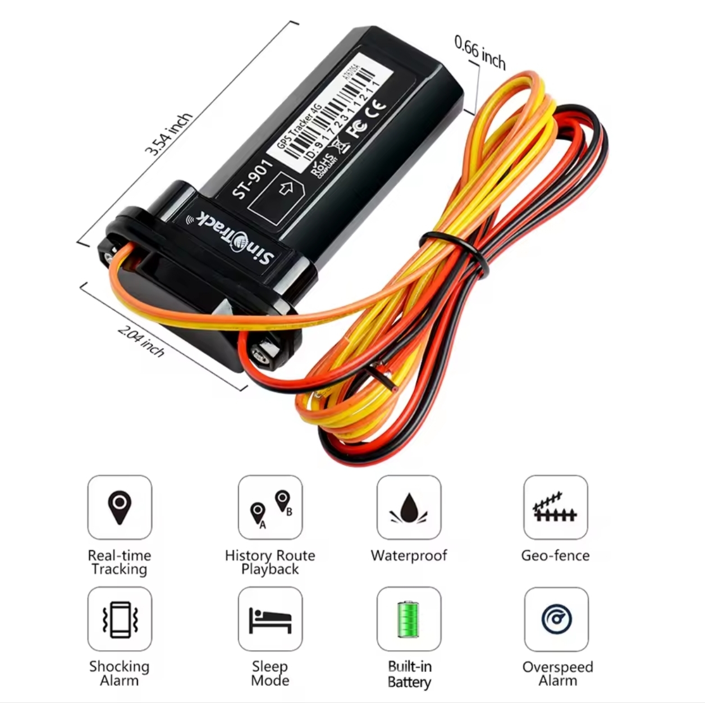
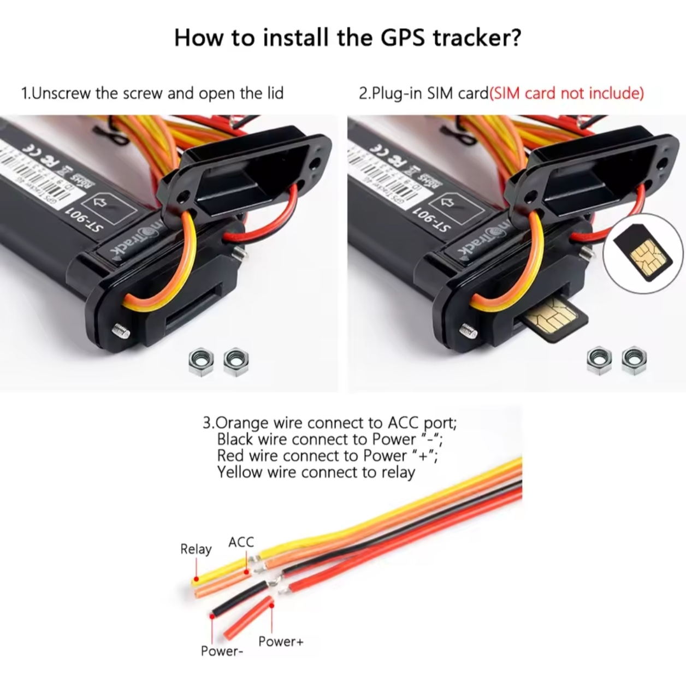
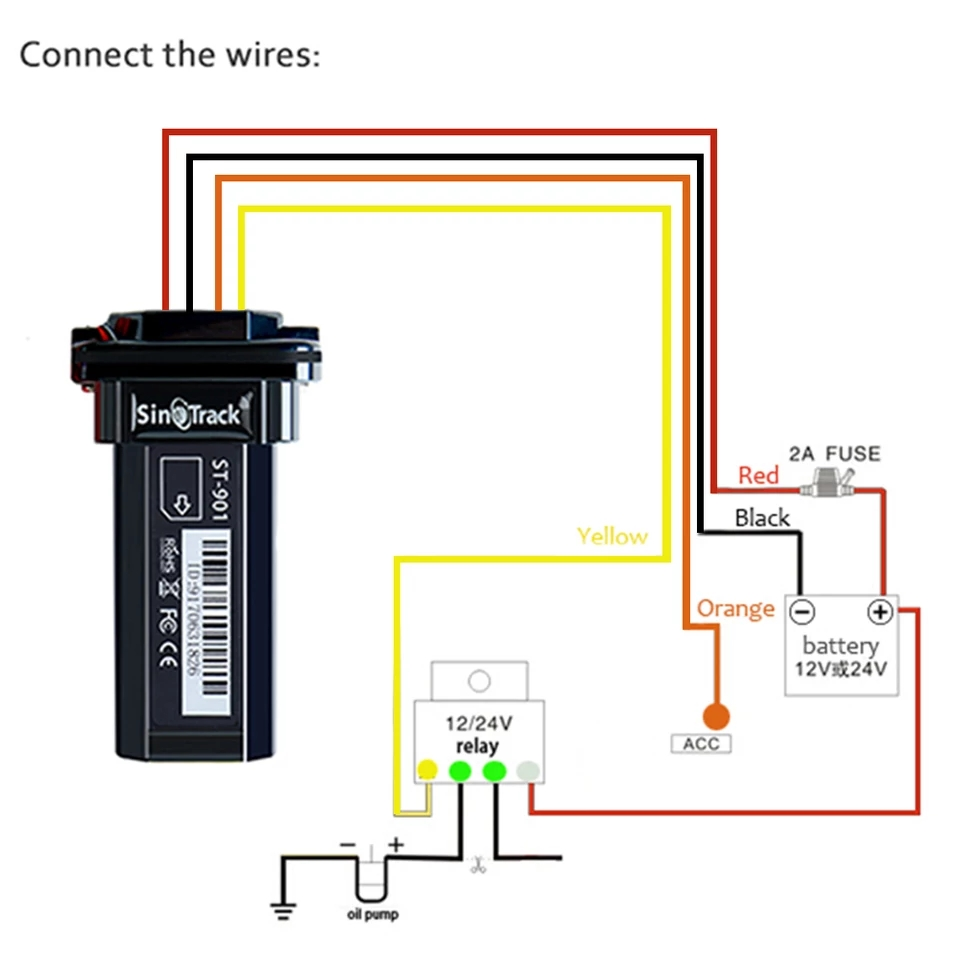
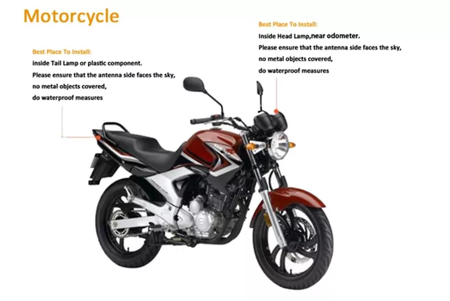
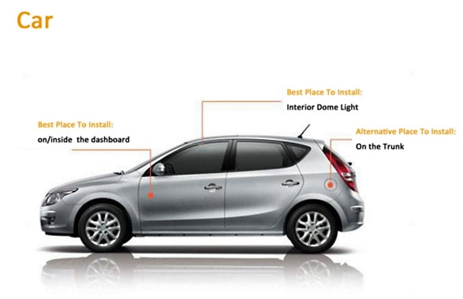
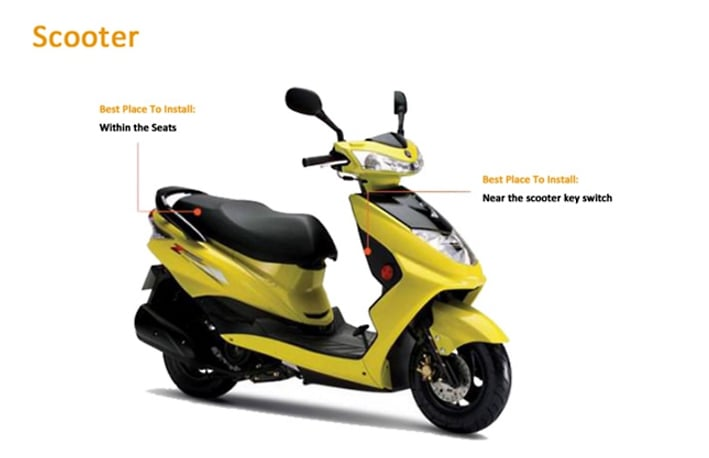

All Over Pakistan
Quality Guaranteed
Installation Help
Original Product with Replacement Warranty
The SinoTrack ST-901 GPS Vehicle Tracker is a reliable real-time vehicle monitoring device designed for cars, motorcycles, trucks, buses and fleet vehicles. Using the Android App, iOS App, Web Platform or SMS commands, you can monitor your vehicle from anywhere with accurate GPS tracking. Track live location, ignition status, travel history, mileage, speed, parking location and receive instant security alerts. Ideal for personal vehicles, commercial transport, rental companies and fleet management.
| Network | GSM / GPRS |
| GPS Accuracy | 5–10 Meters |
| Battery Backup time | 4-5 hrs in gprs mode and 24 hr in sleep mode |
| Working Voltage | 9V – 90V DC |
| Positioning | GPS + GSM |
| Tracking Methods | Android App, iOS App, Website & SMS |
| SIM Card | Standard SIM Card of Any Network ( Ufone, Jazz, Zong as per Your Area) |
| Operating Temperature | -20°C to +70°C |
| App Name | Sinotrackpro |
| Website | www.sinotrackpro.com |
Professional installation is recommended for the best performance. First Insert the SIM as per directions. Connect the tracker directly to your vehicle battery and ACC wire. Insert a working GSM SIM card with SMS and internet package. Download the SinoTrackpro App, scan the QR code or enter the device ID and default password to start live tracking. Installation service is available all over Pakistan.
Yes. It works anywhere with GSM network coverage.
Jazz, Zong, Ufone and Telenor are all supported.
Yes. The ST-901 supports remote engine cut-off when installed with the relay.
No monthly fee for the tracker itself. Only your SIM card's internet/SMS charges apply.
No. We do not provide vehicle tracking or monitoring services. We supply the GPS tracking device along with technical support for setup and troubleshooting. The customer has complete ownership and control of the device, including access to live location, travel history, alerts, reports, and features such as remote engine cut-off (where supported). Only the customer can monitor and manage their vehicle through the mobile app or web platform.
Reliable waterproof GPS tracker with live tracking, ACC alerts, route history, and remote engine cut-off for dependable vehicle security.

Top-selling waterproof GPS tracker with live tracking, backup battery, ACC alerts, and remote engine cut-off for maximum protection.

Future-ready 4G waterproof GPS tracker with live tracking, ACC monitoring, route playback, and remote engine cut-off.

Advanced 4G GPS tracker with voice monitoring, live tracking, instant alerts, and remote engine cut-off for complete security.

Compact GPS tracker featuring voice monitoring, live tracking, ACC alerts, and remote engine cut-off for enhanced security.

Advanced 4G GPS tracker with voice monitoring, real-time tracking, instant alerts, and remote engine cut-off protection.

Compact GPS tracker with live tracking, ACC monitoring, remote engine cut-off, and instant alerts for reliable vehicle security.

Plug-and-play OBD GPS tracker with live tracking, trip history, driving reports, and instant alerts without any wiring.

Mini waterproof GPS tracker with voice monitoring, built-in battery, live tracking, and instant alerts for complete security.

Powerful 4G magnetic GPS tracker with long battery life, live tracking, instant alerts, and wire-free installation.